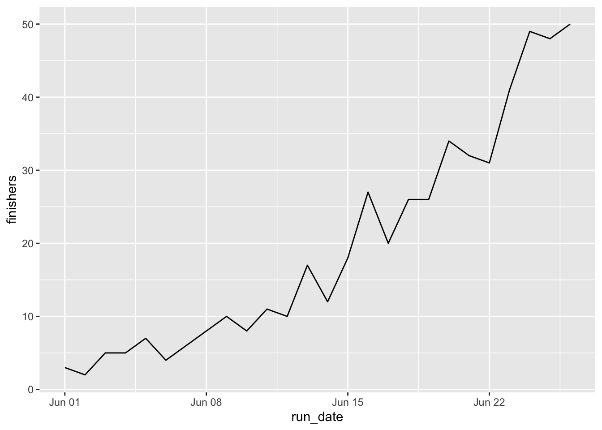
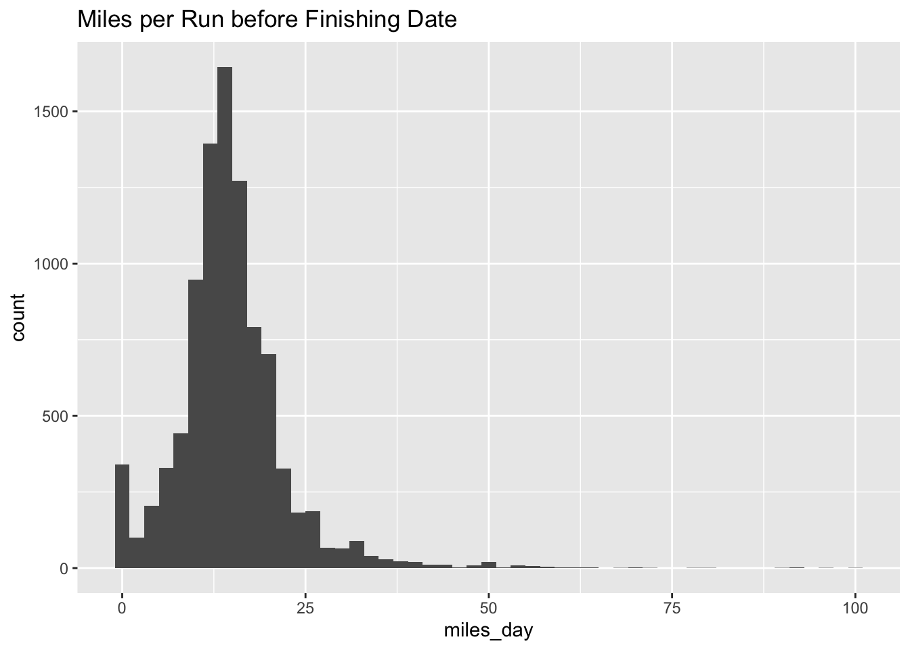
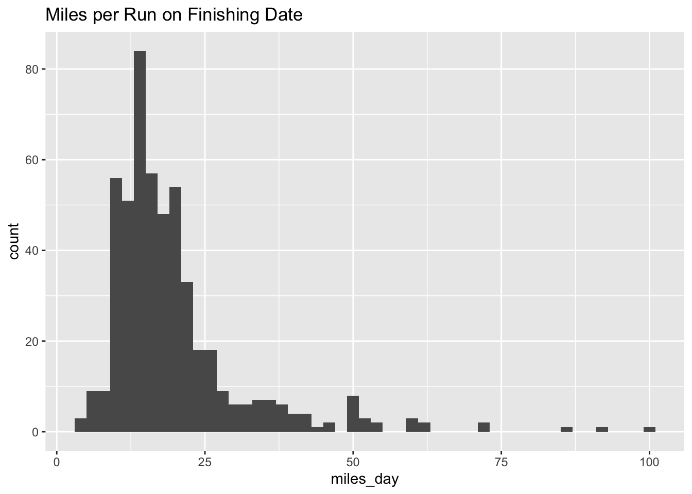

As people start finishing the race it seems like they really push themselves on the last day. I’ve seen people running 20, 30, 50 miles to reach the final distance. I wondered if there was a difference between what people average and what they do on the last day of the race.
Data Loading
suppressPackageStartupMessages(library(tidyverse))
suppressPackageStartupMessages(library(lubridate))
gv <- read_csv("../datasets/GVRAT_June_Summary.csv")## Parsed with column specification:
## cols(
## .default = col_double(),
## Name = col_character(),
## `28-Jun` = col_logical(),
## `29-Jun` = col_logical(),
## `30-Jun` = col_logical()
## )## See spec(...) for full column specifications.It took a little effort to reshape the data for manipulation. I wanted to get Bib, date, miles, and cumulative miles.
gv_miles <- gv %>%
filter(Bib >= 1) %>% # Bibs between 0 and 1 were buzzards
filter(Miles < 684.34) %>% # We want people who hadn't finished in May
mutate(`31-May` = Miles) %>% # Rename Miles to a date for May
select(-c(Name, Miles)) %>% # Drop Miles and Name
pivot_longer(contains("-"), names_to = "run_date",
values_to = "miles_day") %>% # Convert to long form
mutate(run_date = dmy(paste0(run_date, ", 2020"))) %>%
group_by(Bib) %>%
arrange(run_date) %>%
mutate(miles_total = cumsum(miles_day)) June Finishers
Who finished in June?
I found people whose total miles were over the race distance and then took the first run that was over the finish distance.
june_finishers <- gv_miles %>%
filter(miles_total > 684.34) %>%
group_by(Bib) %>%
arrange(miles_total) %>%
slice(1)
june_finishers## # A tibble: 515 x 4
## # Groups: Bib [515]
## Bib run_date miles_day miles_total
## <dbl> <date> <dbl> <dbl>
## 1 2 2020-06-09 19.2 701.
## 2 9 2020-06-08 25 702.
## 3 68 2020-06-25 10.4 686.
## 4 72 2020-06-20 13 693.
## 5 81 2020-06-22 40 718.
## 6 84 2020-06-17 14.4 690.
## 7 92 2020-06-16 18.9 686.
## 8 105 2020-06-01 27 698.
## 9 115 2020-06-26 12.5 694.
## 10 142 2020-06-17 10 685
## # … with 505 more rowsHow many people finished each day in June so far
I constructed a graph to show how more and more people are finishing every day.
gv_miles %>%
filter(miles_total > 684.34) %>%
group_by(Bib) %>%
arrange(miles_total) %>%
slice(1) %>%
group_by(run_date) %>%
filter(run_date < ymd('2020-06-27')) %>%
summarize(finishers = n()) %>%
ggplot(aes(x=run_date, y = finishers)) + geom_line()
June Finishers Mileage Excluding Last Day
Here’s the mean miles of people who finished in June (excluding their last day).
gv_miles %>% filter(Bib %in% june_finishers$Bib) %>%
filter(run_date > ymd('2020-05-31')) %>%
filter(miles_total < 684.34) %>%
group_by(Bib) %>%
summarize(mean_june_miles = mean(miles_day))## # A tibble: 512 x 2
## Bib mean_june_miles
## <dbl> <dbl>
## 1 2 20.5
## 2 9 17.7
## 3 68 13.7
## 4 72 15.1
## 5 81 12.1
## 6 84 17.2
## 7 92 16.4
## 8 115 13.4
## 9 142 16.2
## 10 170 13.0
## # … with 502 more rowsgv_miles %>% filter(Bib %in% june_finishers$Bib) %>%
filter(run_date > ymd('2020-05-31')) %>%
filter(miles_total < 684.34) %>%
group_by() %>%
summarize(mean_june_miles = mean(miles_day),
median_june_miles = median(miles_day)) ## # A tibble: 1 x 2
## mean_june_miles median_june_miles
## <dbl> <dbl>
## 1 14.8 14.1Among June finishers, the daily mileage excluding the last day was 14.8 miles.
June Finishers Mileage on Last Day
gv_miles %>%
filter(miles_total > 684.34) %>%
group_by(Bib) %>%
arrange(miles_total) %>%
slice(1) %>%
group_by() %>%
summarize(mean(miles_day), median(miles_day), min(miles_day), max(miles_day))## # A tibble: 1 x 4
## `mean(miles_day)` `median(miles_day)` `min(miles_day)` `max(miles_day)`
## <dbl> <dbl> <dbl> <dbl>
## 1 19.9 16.9 3.3 99.4Among the 515 finishers in June so far, the mean last day was 19.9 miles. This was skewed quite a bit by some outliers since it was so much higher than the median.
I compared the two histograms:
gv_miles %>% filter(Bib %in% june_finishers$Bib) %>%
filter(run_date > ymd('2020-05-31')) %>%
filter(miles_total < 684.34) %>%
ggplot(aes(miles_day)) + geom_histogram(binwidth = 2) +
ggtitle("Miles per Run before Finishing Date")
gv_miles %>%
filter(miles_total > 684.34) %>%
group_by(Bib) %>%
arrange(miles_total) %>%
slice(1) %>%
ggplot(aes(miles_day)) + geom_histogram(binwidth = 2) +
ggtitle("Miles per Run on Finishing Date")
They are pretty similar. Note that the height of the bins is greater in the first histogram. It looks like people aren’t really going crazy all out on that last day.